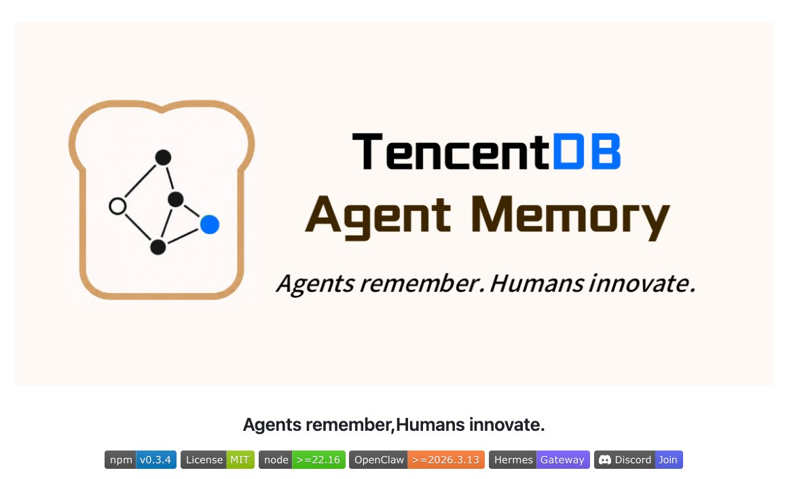
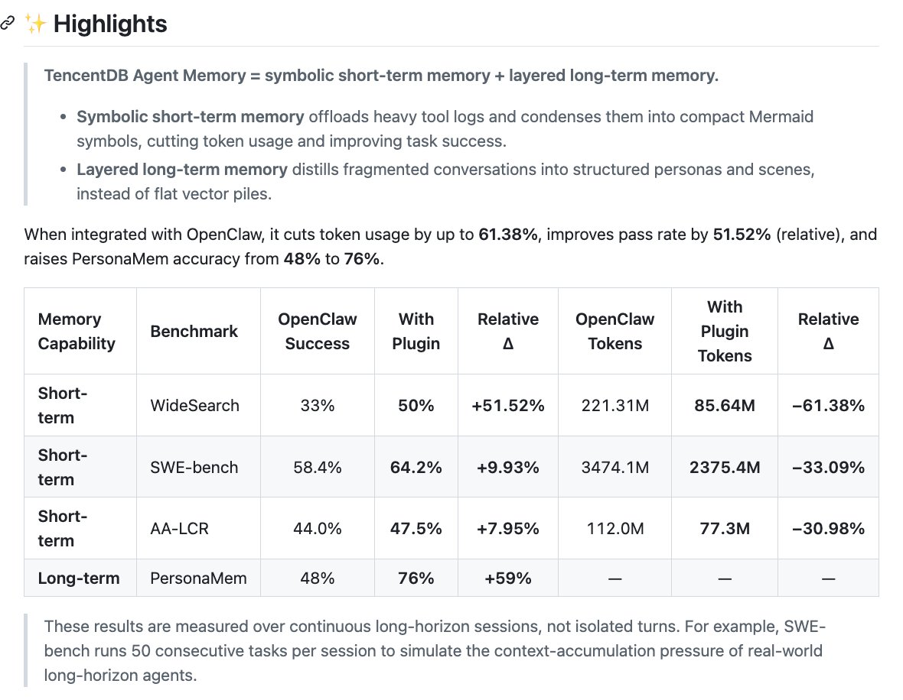
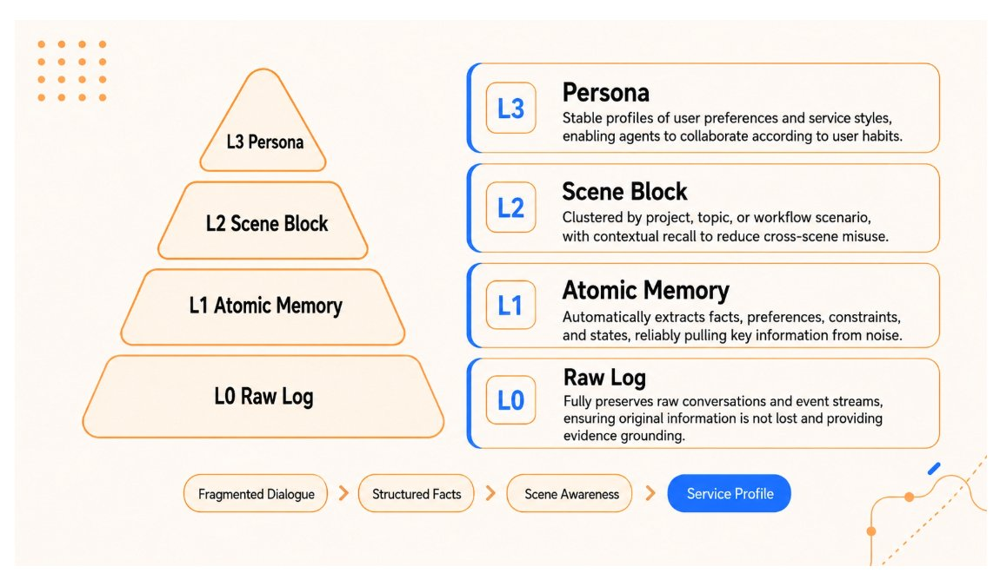
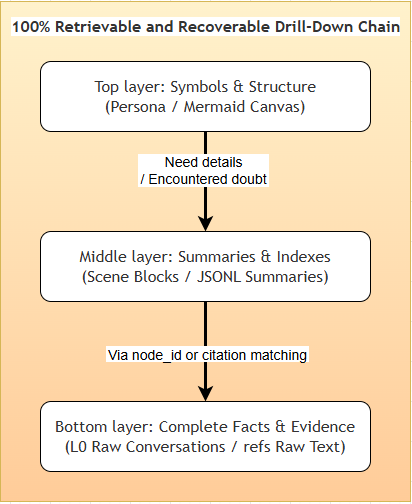
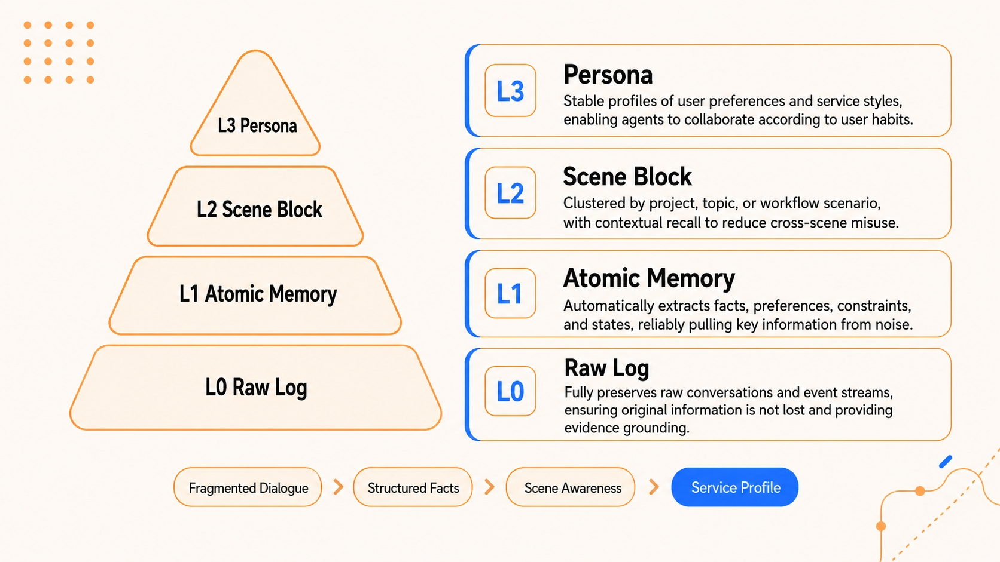

X thread and open-source project reading · 2026-05-15
这条推文真正讲的是：Agent Memory 从“存聊天记录”走向“可压缩、可回溯、可调度的外部认知层”
TencentDB Agent Memory 的核心不是简单加一个向量库，而是把长任务中的短期状态压缩成 Mermaid 任务图，把跨会话经验沉淀成 L0 到 L3 的长期记忆金字塔。它的亮点在于工程化闭环清晰；需要谨慎的地方在于评测数字主要来自项目方公告，尚缺独立复现和细粒度实验设置披露。

2. 原帖的三个主张分别是什么意思
| 推文 claim | 表面意思 | 更准确的技术含义 | 应该如何验证 |
|---|---|---|---|
| 压缩 stale context，token 使用下降 61% | 长会话不再把所有历史塞回 prompt。 | 把工具输出、日志、搜索结果等大块文本卸载到外部文件；上下文里保留 Mermaid 任务图和 node_id / result_ref 索引。 |
比较同一 agent runtime、同一任务序列下总输入 token、成功率、恢复错误时是否能从索引回溯原文。 |
| Mermaid task map 降低 30+ step workflow 迷航 | Agent 不只记内容，还记任务结构。 | 用符号图维护“当前任务、已做步骤、依赖、证据位置”，让模型看到任务形状，而不是一堆线性聊天历史。 | 看多步任务中的重复工具调用、遗漏步骤、错误恢复、跨阶段继续执行能力，而不是只看最终回答。 |
| Persona coherence 从 48% 到 76% | 长期用户画像更稳定。 | 把原始对话蒸馏为 L1 原子事实，再聚合成 L2 场景块，最后形成 L3 Persona；召回时优先注入稳定画像，而不是随机召回相似片段。 | 需要 PersonaMem 这类动态用户画像 benchmark：模型是否能从长上下文中推断用户偏好、约束、身份变化，并回答个性化问题。 |


3. 它到底怎么做：短期压缩 + 长期分层
3.1 短期记忆：把“日志”变成“可导航的任务图”
长任务里最费 token 的通常不是用户需求本身，而是中间产物：网页正文、搜索结果、终端日志、错误堆栈、文件 diff、工具返回的 JSON。传统做法有两个极端：一是全塞回上下文，成本高且注意力分散；二是做一次摘要，省 token 但容易丢证据。TencentDB Agent Memory 采取的是第三种路线：原文外置，结构内置。
node_id。node_id 找回原始日志。
这个设计的关键点是“压缩但不封死”。如果只是 summary，一旦摘要漏掉某个错误码，后续 agent 就无法自证；如果保留 result_ref 和 node_id，模型可以先用紧凑图规划，再按需打开细节。这类似把长上下文改造成一个外部 working memory，而不是把所有文本都视为 prompt。
3.2 长期记忆：把“相似片段召回”变成“分层用户模型”
长期记忆的问题不只是“怎么搜到旧聊天”，更是“哪些旧信息值得成为长期知识”。例如“我用 TypeScript”可能是长期偏好；“今天帮我查天气”通常只是一次性任务。如果都丢进同一个向量库，召回会变成盲搜，模型很难区分偏好、事实、场景和噪声。

| 层级 | 保存对象 | 作用 | 典型风险 |
|---|---|---|---|
| L0 Raw Log | 原始对话、事件流、工具结果 | 保留证据，支持审计和回滚 | 太大，不能直接大量注入上下文 |
| L1 Atomic Memory | 事实、偏好、约束、阶段结论 | 作为可检索的结构化记忆单元 | LLM 抽取错误、重复、冲突 |
| L2 Scene Block | 按项目、主题、工作流聚合的场景 | 减少跨场景误用，让召回知道“这是哪类任务” | 场景边界切错会污染召回 |
| L3 Persona | 稳定用户画像、服务风格、长期习惯 | 给日常协作提供高层先验 | 画像过度概括，可能固化过时偏好 |
3.3 从源码和配置看，项目是一个插件化记忆底座
仓库不是只放了 README：index.ts 是 OpenClaw 插件入口，注册 hook 和两个 agent-callable tool；src/core/tdai-core.ts 把核心能力抽成 host-neutral facade，供 OpenClaw 和 Hermes/Gateway 调用；src/offload 包含上下文卸载、MMD 注入、session registry、token tracking、state manager；openclaw.plugin.json 暴露配置 schema。
核心结构摘要：
index.ts OpenClaw 插件入口，注册 hooks / tools / offload
src/core/tdai-core.ts host-neutral 核心 facade
src/core/hooks/auto-recall.ts 对话开始前自动召回相关记忆
src/core/hooks/auto-capture.ts 对话结束后自动捕获并写入 L0/L1
src/core/store/sqlite.ts 本地 SQLite + sqlite-vec 存储
src/core/store/tcvdb.ts 腾讯云向量数据库后端
src/core/tools/memory-search.ts tdai_memory_search
src/core/tools/conversation-search.ts tdai_conversation_search
src/offload/* context offload 与 Mermaid 注入机制4. 评测数字怎么读
| 能力 | Benchmark | OpenClaw | 加插件后 | 变化 | 我的解读 |
|---|---|---|---|---|---|
| 短期记忆 | WideSearch | 成功率 33%，token 221.31M | 成功率 50%，token 85.64M | 成功率相对 +51.52%，token -61.38% | 最能支持“上下文卸载有效”的结果；但需要知道任务数、模型、上下文窗口、是否同一随机种子。 |
| 短期记忆 | SWE-bench | 成功率 58.4%，token 3474.1M | 成功率 64.2%，token 2375.4M | 成功率相对 +9.93%，token -33.09% | 更接近软件工程长链路场景；README 说 SWE-bench 每个 session 连续 50 个任务，用来模拟上下文累积压力。 |
| 短期记忆 | AA-LCR | 成功率 44.0%，token 112.0M | 成功率 47.5%，token 77.3M | 成功率相对 +7.95%，token -30.98% | 提升更温和，说明它不是所有任务都出现巨大收益；token 下降比成功率提升更稳定。 |
| 长期记忆 | PersonaMem | 48% | 76% | +59% relative | 说明分层 persona 可能显著优于无专门记忆的 OpenClaw baseline；但需要看 question type、上下文注入策略、是否使用同一模型。 |
4.1 “相对提升”不要误读成百分点
WideSearch 从 33% 到 50%，绝对提升是 17 个百分点；相对提升是 (50 - 33) / 33 = 51.52%。PersonaMem 从 48% 到 76%，绝对提升是 28 个百分点，相对提升约 58.33%，项目方四舍五入写成 59%。这类数字看起来很大，但实际含义取决于 baseline 是否强、任务样本是否足够、评测是否独立复现。
4.2 这类 memory benchmark 到底评什么
短期记忆评的是长 session 内的状态管理能力：agent 是否能在几十步工具调用后仍知道任务目标、上一步做了什么、哪些证据可用、哪些错误需要修复。长期记忆评的是跨会话个性化：系统是否能从很多对话中抽取用户偏好和稳定事实，并在新问题中正确使用。
因此这条推文不是在说“模型权重更聪明了”，而是在说“agent harness 给模型提供了一种更好的外部状态表示”。这是很重要的区分：它改进的是运行时信息组织，不是基础模型能力本身。
5. 主要局限和风险
1. 评测细节仍不够透明
README 和腾讯云文章给出了表格，但没有完整披露每个 benchmark 的任务清单、模型版本、prompt、随机性、失败样例、统计置信区间。当前更适合视为项目方发布的初步证据，而不是最终学术结论。
2. 记忆抽取本身会出错
L1/L2/L3 都依赖 LLM 抽取、聚合和蒸馏。LLM 可能把一次性上下文误当长期偏好，也可能把过期事实写进 Persona。分层能降低噪声，但不能消灭噪声。
3. 回溯链要求工程纪律
node_id、result_ref、JSONL、refs 文件必须稳定维护；一旦引用断裂，上层 Mermaid 图就会变成看起来漂亮但无法审计的摘要。
4. Persona 可能带来隐私和安全问题
长期用户画像越有用，越需要权限、清理、导出、删除、冲突处理和敏感信息隔离。README 里有本地后端和保留天数配置，但生产使用还需要更严格的数据治理。
5. 不是所有 agent 都需要完整四层系统
短生命周期任务可能只需要简单 scratchpad；客服/创作/研发助理这类长期协作任务才更能释放 L2/L3 价值。过度引入记忆层会增加调试复杂度。
6. 和模型长上下文不是替代关系
长上下文能提供原始证据，记忆系统提供结构化索引。更合理的未来不是二选一，而是长上下文负责“可读原文”，memory harness 负责“选择、组织、回溯”。
6. 我的判断：这件事的真正价值在哪里
我认为这条推文最值得关注的不是“节省 61% token”这个单点数字，而是它把 agent memory 拆成了两个不同问题：长任务里的 working state 压缩，和跨会话的 user/world model 沉淀。很多 memory 产品把这两件事混在一起，最后变成“把历史聊天塞进向量库”；TencentDB Agent Memory 至少在概念和代码结构上把它们分开了。
node_id / result_ref 解决审计回溯。三者合起来，才像一个工程上能用的 memory layer。
如果我是使用者，我会先把它用在三类任务上验证：长链路研发任务、反复生成同一风格内容的创作任务、需要跨会话记住项目约束的研究助理。验证时不要只看 token 下降，要同时记录：错误恢复次数、重复解释次数、错误召回次数、persona 污染次数、人工删除/修正记忆的频率。
如果我是项目作者，我会优先补三件事：公开可复现 benchmark harness；提供 memory diff/approve UI，避免 LLM 自动写错长期画像；增加“过期/冲突/敏感记忆”的治理机制。因为 memory 系统真正进入生产后，最难的往往不是第一次记住，而是持续地改正、遗忘和解释为什么这么记。
证据边界与资料索引
X 原帖与评论
通过 公开页面读取 Tencent AI 官方账号在 2026-05-14 发布的原帖、15 条左右回复和三张配图。原帖强调 6 个月投入、61% token 节省、30+ step workflow 不迷航、persona coherence 从 48% 到 76%。
GitHub README 与源码
短链解析到 Tencent/TencentDB-Agent-Memory。README 解释 symbolic short-term memory、layered long-term memory、OpenClaw/Hermes 接入、评测表格与 Roadmap；源码中可见 src/core、src/offload、openclaw.plugin.json 等实现入口。
腾讯云文章与 npm 包
腾讯云开发者社区文章复述开源背景、四层记忆、上下文卸载与指标；npm 包 @tencentdb-agent-memory/memory-tencentdb 说明它是 OpenClaw 插件，当前版本为 0.3.4，依赖 SQLite、sqlite-vec、BM25、OpenAI-compatible LLM 等组件。